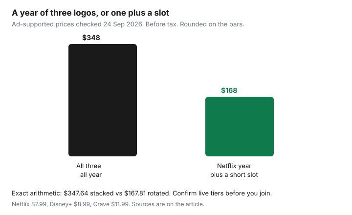

Subscriptions · Canada
How to Rotate Streaming Services in Canada Without Paying for Everything All Year
Canadian households keep Netflix, Disney+, and Crave running together because each new season arrives while the last one is unfinished. The bill is the stack, not any single logo. Rotation is a household rule: one service stays on, one slot turns with the shows you will actually finish, and the quiet months belong to the library card.
Prices below were checked for this draft on 24 Sep 2026. They move. Confirm the tier on the vendor page the week you join, and write that CAD figure on the calendar. Choosing internet-only versus Ignite TV is the Ignite comparison and the cord-cutting stack. This page starts after that choice, when the question is which streamers stay paid.
Disclosure: Streaming gift cards and cash-back portals are offer types. Saving Optimizer may earn a commission if we later add partner links. We do not currently claim a Netflix, Disney+, Crave, or gift-card partnership. Education only.
Key takeaways
- One always-on video service, chosen from what you watched in the last 30 days. One rotating slot. Everything else is off.
- Join Crave, Disney+, or Netflix for the show you named, then cancel at the end of the billing period. Do not wait for “after the season” with no date.
- Kanopy and Hoopla, through your public library, cover a lot of documentary and kids filler. The monthly cap is your library’s, not a national number.
- A Rogers or Bell add-on that pauses direct billing can start charging the card again when you leave the bundle. Check both accounts.
- Price the tier you will actually use. Three paid video streamers overlap for no more than 60 days.
Pick one always-on service and one rotating slot based on what you actually watch
List what the household finished in the last month, not what the apps recommend. The service that shows up in that list every month is the always-on. For many homes that is Netflix, because it is the default weeknight. For a household that lives in HBO and Crave originals, Crave is the always-on and Netflix is the visitor. The test is the last 30 days, the same test as the subscription audit.
The rotating slot holds one paid service at a time. Disney+ for the family film month. Crave for the series you named. A sports add-on only for the weeks the season is on, if you will watch it. The slot is empty on purpose in some months. Empty is the point. Prime Video comes with Prime. Count it as a paid streamer only if video is why you are keeping Prime. Shipping math is the Prime break-even.
Write the two names on the fridge or the shared calendar: “Always-on: Netflix Standard with ads. Slot: empty until November.” If you cannot name the always-on, you are still stacking.
Time Crave, Disney+, and Netflix joins around shows you care about—then cancel at period end
A join needs a title and a month. “Crave in January because we will watch the season that drops then” is a plan. “Crave in case” is a stack. Start the membership when the episodes you want are actually on the service. Binge inside the period you paid for. Cancel as soon as you know you will not need the next period, which is usually the day you finish, not the day the charge is about to hit.
Netflix’s help centre, used 24 Sep 2026, says you cancel on the membership page, you keep access until the end of the period you already paid, and signing out does not cancel. If Netflix is billed by a TV or mobile partner, the cancel control sits with that partner. Disney+ and Crave follow the same idea: cancel in the account that charges you, and expect access until that period ends. A pause, where Netflix offers one, is not a cancel. Netflix’s help says a pause can last up to three months and then billing resumes. Use pause only if you have already decided to return. Otherwise cancel and rejoin later. Rejoining keeps viewing history for a long window. You are not punished for leaving.
Do not start the next slot’s service until the previous cancel confirmation is saved. That is one-in-one-out. Overlap belongs only in the 60-day rule below, and only when two shows truly collide.
Use library digital (Kanopy/Hoopla) for documentaries and kids filler between paid months
A lot of “we need something on” is documentaries, older films, and children’s episodes. Public libraries in many Canadian cities offer Kanopy, Hoopla, or both with a library card. Ottawa Public Library, for example, publishes a Kanopy page for cardholders. Your system’s monthly play or borrow cap is on that library’s page. Do not copy a cap from another city. If the library does not offer either service, the library’s own streaming, CBC Gem, and ICI Tou.tv’s free tier still cover some of the filler. They are not a substitute for a specific HBO series. They are a substitute for paying a fourth logo so the TV is not blank.
Put “library month” on the rotation calendar between paid joins. Kids’ filler is the category that most often keeps Disney+ on all year. A library month plus one paid Disney+ month around a release is usually enough. If the children are in the middle of a series that exists only on Disney+, that month is a real join. The other eleven months are not.
Watch for Rogers/Bell add-on pauses that resume direct billing when you leave the bundle
Carrier bundles are where rotation goes to die. Crave on a Bell TV or mobility add-on, Disney+ as a credit, Netflix linked to a Rogers package: the streamer looks free because the charge moved. Netflix’s help says that when you link an existing account to a package, Netflix stops billing the card, and you should not cancel first if you want to keep profiles and the list. The reverse is the trap. When you drop the package, the link can end and the card on the Netflix account can be charged again. The same pattern shows up with other partners. Leaving TV is not, by itself, a cancel of the streaming account you linked.
Before you change a Rogers, Bell, Telus, or Videotron bundle, open the streamer account and read who the next charge belongs to. If the membership page says the payment partner, cancelling only on Netflix will not remove the partner line. If it says your card, dropping the partner will not stop the card. Write both facts in the sheet. The decision to keep or drop Ignite TV is not this page. Price that on the Ignite guide. Here you only stop the surprise resume.
Track CAD prices by tier (ads vs ad-free) so rotation does not sneak into a higher plan
Rotation fails in a second way: you rejoin on the premium tier because that is what the app offers first. Write the tier next to the month. Ads are a reasonable default for an always-on service you use as background. Ad-free is a choice for the month you are actually watching, if the ads bother you, not a permanent upgrade you forget.
| Service | With ads | Higher tier | Where the figure comes from |
|---|---|---|---|
| Netflix | $7.99 Standard with ads | $18.99 Standard, $23.99 Premium | Convergence Research Couch Potato Report, as reported by CP24 on 23 Mar 2026 |
| Disney+ | $8.99 Standard With Ads, monthly | Standard $15.99/month or $159.99/year; Premium $16.99/month or $169.99/year | Disney+ Help Centre (CA): new-subscription prices as of 20 May 2026; existing subscriptions see the change on or after 1 Jun 2026. Premium annual from the Disney+ Canada FAQ. |
| Crave, direct | $11.99 Standard With Ads | $22 Premium | Bell Media release on the expanded service: packages starting at $11.99 and $22. Prime Video channel price $11.99/month in the 1 Oct 2025 release. A Bell TV add-on is a different bill. |
| Disney+ and Crave, ads bundle | $15.75/month | Higher bundles are on the Disney+ help table | Disney+ Help Centre (CA), same 20 May 2026 price note |
Labelled year, ad-supported, before tax. Netflix $7.99, Disney+ $8.99, and Crave $11.99 all year is $28.97 a month, or $347.64. The same Netflix all year, Disney+ for four months, and Crave for three months is $95.88 + $35.96 + $35.97 = $167.81. The gap is $179.83, and five months of the rotating slot are empty on purpose. On the ad-free figures in the table (Netflix Standard $18.99, Disney+ Standard $15.99, Crave Premium $22), the full stack is $683.76 a year and the same 12 / 4 / 3 pattern is $357.84. The gap is $325.92. A bundle at $15.75 can beat two separate ad tiers in a month you truly want both. It should not become a new always-on stack.

Annual Disney+ ($159.99 Standard or $169.99 Premium, before tax) is cheaper per month than twelve monthly charges only if you will keep it all year. If you want four months, monthly is the rotation price. Do not “save” with an annual plan you will not watch in August.
Household rule: never keep three paid video streamers active for more than 60 days
Two shows sometimes drop in the same stretch. The rule allows three paid video streamers, including a Prime membership you are keeping only for video, for 60 days and then one of them must be cancelled. Put the day-60 date on the calendar when the third one starts. On day 60 the overlap ends even if a season is unfinished. Finish inside the period you have, or accept that the rest waits until that service rotates back.
Sixty days is long enough for a collision and short enough that “just until we’re done” cannot become a year. If you hit day 60 with all three still on, cancel the one with the fewest hours watched in those two months. The always-on stays. The slot keeps the show you are actually in. The third one goes. Gift cards and portal cash-back, if you use them, apply to a join you already decided. They are not a reason to add a fourth.
Sources & date stamps
- CP24, 23 Mar 2026, citing the Convergence Research Couch Potato Report: Netflix Canada Standard with ads $7.99, Standard $18.99, Premium $23.99, after the increases described in that report.
- Disney+ Help Centre (CA), plans and prices, used 24 Sep 2026: new-subscription prices as of 20 May 2026; Standard With Ads $8.99/month; Standard $15.99/month or $159.99/year; bundle with Crave With Ads $15.75/month. Disney+ Canada FAQ: Premium $16.99/month or $169.99/year.
- Bell Media / CNW, Crave expansion and the 1 Oct 2025 Prime Video channel release: Standard With Ads from $11.99 and Premium $22 on the direct packages described there. Carrier retail prices can differ.
- Netflix Help, “How to cancel Netflix,” used 24 Sep 2026: membership-page cancel, partner billing, and pause up to three months.
- The $347.64 / $167.81 and $683.76 / $357.84 years are arithmetic on those tier prices, before tax. They are not a bill.
Frequently asked questions
Is it cheaper to keep all three streamers on the ad tier?
On the prices checked 24 Sep 2026, three ad-supported plans all year are about $348 before tax. Rotating Disney+ for four months and Crave for three, with Netflix on all year, is about $168. Confirm the live tier before you join. The gap is the empty months.
Does a Bell or Rogers bundle count as one of the three?
Yes, if you are paying for it inside the bundle in order to watch it. A credit that is truly included in a TV package you would keep anyway still counts as a streamer for the 60-day overlap, because it is active video you could cancel by leaving that add-on.
Will I lose my Netflix list if I cancel?
Netflix says it keeps viewing activity, recommendations, and account details for 24 months after the account closes, so a rejoin inside that window still looks like your account. Change the password if you do not want someone else in the house to restart it.
What if my library does not have Kanopy?
Use the digital services that library does offer, and CBC Gem or other free tiers for filler. Do not invent a fourth paid subscription to cover a Tuesday night. The cap and the catalogue are local.
Should I buy the annual Disney+ plan?
Only if the calendar says you will keep Disney+ for the year. Four months at $15.99 is $63.96 before tax. The Standard annual price checked for this draft is $159.99. Annual is the wrong product for a rotating slot.